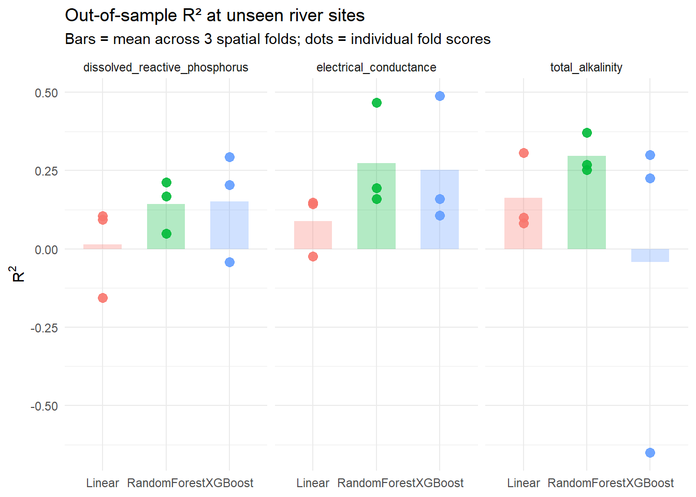

Code
library(tidyverse)
library(ranger)
library(xgboost)
library(gt)
set.seed(42)Joshua Eisner
South African rivers do not get enough scientific attention for a country that has spent the last decade in a water crisis. Ground based water sampling, the standard way of measuring water quality, is expensive, time consuming, and inevitably restricted to a small fraction of the country’s river network. If satellite imagery and freely available climate data could plausibly predict water quality at rivers that aren’t actively monitored, that would be a genuine win, all for the science, for the agencies trying to allocate limited monitoring budgets, and of course for the citizens of South Africa.
That’s the broader project this report sits inside. My group set out to predict three water quality indicators in South African rivers: total alkalinity, electrical conductance (EC), and dissolved reactive phosphorus (DRP) from Landsat reflectance bands, derived indices like NDMI and MNDWI, and potential evapotranspiration (PET) from TerraClimate. The training data spans 162 river sites sampled between 2011 and 2015, giving us 9,319 paired observations.
My individual question is narrower: of the three machine learning models we considered - linear regression, Random Forest, and XGBoost - which one predicts water quality most accurately at rivers the model has not seen during training? The “not seen” part is what makes this question harder than it first appears. Most prediction problems in machine learning are about generalizing to new examples drawn from the same distribution as the training set; this one is specifically about generalizing to new locations. A model that performs well when given new dates from rivers it already knows might be useless on an unfamiliar river in a different part of the country. That distinction shaped every choice in what follows.
The analysis uses three datasets, all keyed on latitude, longitude, and sample date.
The water quality file holds the three targets I’m trying to predict: total alkalinity (mg CaCO₃/L), electrical conductance (mS/m at 25°C), and dissolved reactive phosphorus (µg/L). The Landsat file contributes four surface reflectance bands: near infrared, green, and the two shortwave infrared bands - plus two derived indices, NDMI (a moisture indicator) and MNDWI (a water presence indicator). The TerraClimate file provides a single climate variable, PET.
Loading and merging these files looks straightforward, but it contains one real potential problem. The sample dates are stored as DD-MM-YYYY strings, which is unambiguous for a date like 14-07-2014 but ambiguous for something like 02-01-2011. R’s default as.Date() and many other parsers will silently interpret the latter as the wrong date, producing data corruption that is almost impossible to detect downstream. I wrote an explicit format parser that aborts with an informative error if any row fails.
# Explicit DD-MM-YYYY parser. Errors loudly if any row fails to parse.
# This matters because R will otherwise silently misinterpret these dates.
parse_date <- function(x) {
d <- as.Date(x, format = "%d-%m-%Y")
if (any(is.na(d))) stop("Date parsing failed on ", sum(is.na(d)), " rows")
d
}
# Read each CSV, standardize column names, and parse the date column.
read_one <- function(path) {
read_csv(path) %>%
rename_with(~ tolower(gsub(" ", "_", .))) %>%
mutate(sample_date = parse_date(sample_date))
}
wq <- read_one("water_quality_training_dataset.csv")
ls <- read_one("landsat_features_training.csv")
tc <- read_one("terraclimate_features_training.csv")
# Merge on the three keys. Inner join is safe here because all three
# files share the same sampling events row-for-row.
water_data <- wq %>%
inner_join(ls, by = c("latitude", "longitude", "sample_date")) %>%
inner_join(tc, by = c("latitude", "longitude", "sample_date"))
cat("Rows:", nrow(water_data),
"| Sites:", n_distinct(paste(water_data$latitude, water_data$longitude)), "\n")Rows: 9319 | Sites: 162 About 12% of the Landsat rows have missing values, probably because cloud cover prevented a clean satellite reading on those days. Dropping these rows would also discard the matching water quality and climate measurements, which would waste a substantial amount of training data. I imputed missingness using the column median, a simple and conservative choice that does not introduce extreme outliers but also does not pretend to know why the values are missing.
landsat_cols <- c("nir", "green", "swir16", "swir22", "ndmi", "mndwi")
water_data <- water_data %>%
mutate(
# Site ID for grouped (spatial) cross-validation later
site_id = paste0("S_", dense_rank(paste(latitude, longitude))),
# Calendar features — let tree models pick up seasonal patterns
year = as.integer(format(sample_date, "%Y")),
month = as.integer(format(sample_date, "%m")),
doy = as.integer(format(sample_date, "%j"))
) %>%
# Fill Landsat NAs (~12%, mostly cloud cover) with column medians
mutate(across(all_of(landsat_cols),
~ ifelse(is.na(.), median(., na.rm = TRUE), .)))All three water quality targets are right skewed. Alkalinity and EC have long upper tails; phosphorus shows detection limit clustering at 5, 10, and 20 µg/L, which is the famcy way of saying “below this threshold, we cannot give you an exact value.” I log transformed all three targets before fitting any model. This is standard practice for right skewed quantities that span more than an order of magnitude, and it lets the models learn relative rather than absolute differences.
I compared three well known models that range in complexity for tabular prediction. Linear regression is the simple statistical baseline: fast, interpretable, and constrained to additive effects with no automatic feature interactions. Random Forest, fitted using the ranger package for its speed and multicore support, builds 300 bootstrapped decision trees and averages their predictions; it captures non linear relationships and feature interactions through the tree splitting process, and the averaging step makes it relatively robust to noise. XGBoost is gradient boosted trees: each new tree corrects the residual errors of the previous ones, producing a sequential ensemble that often (but we’ll see) wins tabular competitions when there is enough data to train it without overfitting.
The XGBoost configuration uses up to 500 boosting rounds with a learning rate of 0.1 and maximum tree depth of 6. It also includes early stopping: 15% of the training data is held out for validation, and training stops once 20 consecutive rounds don’t improve anything. This prevents the model from continuing to fit noise after it has captured the real signal, and it speeds up training considerably.
The evaluation method matters more than the model choice. The naive way of evaluating a regression model would be to randomly split rows into 70% training and 30% test, fit the model, and measure prediction quality on the remaining 30%. I wouldn’t do that here. Each of the 162 sites contributes many observations across different dates, so a random row split would put the same site in both training and test, just on different days. The model would learn each site’s specific signature during training and then “predict” related days at the same sites with suspiciously high accuracy. The \(R^2\) I would get would measure interpolation within known sites - not generalization to new ones, which is my actual question for this project.
The right method is grouped (or “spatial”) cross-validation, where folds are defined by sites rather than by rows. I assigned each of the 162 sites randomly to one of three folds. For each fold, the model trained on the other two folds’ sites and was tested on the held out fold. This guarantees that no site appears in both training and test data within a single evaluation pass. I used three folds rather than the more typical five or ten because with only 162 sites, smaller folds would leave too few test sites per evaluation to give stable estimates, and the model needs at least roughly 100 training sites to fit anything useful.
I measured each model’s performance using \(R^2\), computed explicitly as 1 - SS_residual / SS_total rather than relying on implementations from specific packages that can quietly differ in how they handle the test set baseline. \(R^2\) has the advantage of being directly comparable across the three different water quality targets despite their different units, and it has a clean interpretation: the proportion of variance in the target that the model explains.
One subtlety about \(R^2\) in this setting is that it can come out negative. The familiar 0-1 bound that we think of applies only to the in-sample fit of a least-squares model, where the math literally guarantees the model cannot do worse than predicting the mean. On held-out test data, no such guarantee exists. If the model’s predictions are systematically biased, for example, if a held out fold happens to contain geologically distinct rivers the model never saw, the residual sum of squares can exceed the total sum of squares, and \(R^2\) turns negative. A negative value is not a bug or a coding error. It is an honest measurement saying the model did worse than naively predicting the average. In spatial cross-validation this is not unusual.
Each model was trained and evaluated nine times in total: three targets \(\times\) three folds. The chunk below runs the full cross-validation loop, and the mean \(R^2\) across folds is the headline number for each model-and-target combination.
# Features used by all three models
predictors <- c("latitude", "longitude", "nir", "green", "swir16", "swir22",
"ndmi", "mndwi", "pet", "year", "month", "doy")
targets <- c("total_alkalinity", "electrical_conductance",
"dissolved_reactive_phosphorus")
# Out-of-sample R² computed explicitly — this can be negative when the
# model predicts worse than the test-set mean (see Methods).
r_squared <- function(actual, predicted) {
1 - sum((actual - predicted)^2) / sum((actual - mean(actual))^2)
}
# Assign each site (not each row) to one of three folds
sites <- unique(water_data$site_id)
n_folds <- 3
site_fold <- setNames(sample(rep(1:n_folds, length.out = length(sites))), sites)
results <- tibble()
for (target in targets) {
for (k in 1:n_folds) {
# Hold out one fold's sites for testing
test_sites <- names(site_fold)[site_fold == k]
train <- water_data %>% filter(!site_id %in% test_sites)
test <- water_data %>% filter( site_id %in% test_sites)
# Log-transform skewed targets, then pull out predictor matrices
y_train <- log10(train[[target]])
y_test <- log10(test[[target]])
X_train <- as.data.frame(train[, predictors])
X_test <- as.data.frame(test[, predictors])
# 1. Linear regression — simple additive baseline
fit_lm <- lm(y_train ~ ., data = data.frame(y_train, X_train))
r2_lm <- r_squared(y_test, predict(fit_lm, newdata = X_test))
# 2. Random Forest via ranger (multicore, fast)
fit_rf <- ranger(x = X_train, y = y_train, num.trees = 300)
r2_rf <- r_squared(y_test, predict(fit_rf, X_test)$predictions)
# 3. XGBoost with early stopping on a small validation slice.
# Early stopping ends training once improvement plateaus,
# which keeps the model from overfitting noise.
val_idx <- sample(seq_len(nrow(X_train)), size = floor(0.15 * nrow(X_train)))
dtrain <- xgb.DMatrix(as.matrix(X_train[-val_idx, ]), label = y_train[-val_idx])
dval <- xgb.DMatrix(as.matrix(X_train[ val_idx, ]), label = y_train[ val_idx])
fit_xgb <- xgb.train(
data = dtrain,
watchlist = list(val = dval),
nrounds = 500, max_depth = 6, eta = 0.1,
objective = "reg:squarederror",
early_stopping_rounds = 20, verbose = 0
)
r2_xgb <- r_squared(y_test, predict(fit_xgb, as.matrix(X_test)))
results <- bind_rows(results, tibble(
target = target, fold = k,
Linear = r2_lm, RandomForest = r2_rf, XGBoost = r2_xgb
))
}
}
# Mean R² across folds, per model × target
results %>%
group_by(target) %>%
summarise(across(c(Linear, RandomForest, XGBoost), mean), .groups = "drop") %>%
# Cleaner display names for the target column
mutate(target = case_when(
target == "total_alkalinity" ~ "Total Alkalinity",
target == "electrical_conductance" ~ "Electrical Conductance",
target == "dissolved_reactive_phosphorus" ~ "Dissolved Reactive Phosphorus"
)) %>%
gt(rowname_col = "target") %>%
tab_header(
title = "Mean Out-of-Sample R² Across 3 Spatial Folds",
subtitle = "Higher values indicate better generalization to unseen river sites"
) %>%
tab_spanner(
label = "Model",
columns = c(Linear, RandomForest, XGBoost)
) %>%
cols_label(
Linear = "Linear Regression",
RandomForest = "Random Forest",
XGBoost = "XGBoost"
) %>%
fmt_number(columns = c(Linear, RandomForest, XGBoost), decimals = 3) %>%
# Highlight the best model per row by bolding the max R² in each row
tab_style(
style = cell_text(weight = "bold"),
locations = cells_body(
columns = c(Linear, RandomForest, XGBoost),
rows = Linear == pmax(Linear, RandomForest, XGBoost)
)
) %>%
tab_style(
style = cell_text(weight = "bold"),
locations = cells_body(
columns = c(Linear, RandomForest, XGBoost),
rows = RandomForest == pmax(Linear, RandomForest, XGBoost)
)
) %>%
tab_style(
style = cell_text(weight = "bold"),
locations = cells_body(
columns = c(Linear, RandomForest, XGBoost),
rows = XGBoost == pmax(Linear, RandomForest, XGBoost)
)
) %>%
tab_source_note(
source_note = "Folds split by site, so test rivers are unseen during training."
) %>%
tab_options(
table.font.size = 13,
heading.title.font.size = 15,
heading.subtitle.font.size = 12
)| Mean Out-of-Sample R² Across 3 Spatial Folds | |||
| Higher values indicate better generalization to unseen river sites | |||
Model
|
|||
|---|---|---|---|
| Linear Regression | Random Forest | XGBoost | |
| Dissolved Reactive Phosphorus | 0.014 | 0.143 | 0.152 |
| Electrical Conductance | 0.089 | 0.274 | 0.252 |
| Total Alkalinity | 0.163 | 0.298 | −0.042 |
| Folds split by site, so test rivers are unseen during training. | |||
results_long <- results %>%
pivot_longer(c(Linear, RandomForest, XGBoost),
names_to = "model", values_to = "r2")
# Means used for bar heights
means <- results_long %>%
group_by(target, model) %>%
summarise(mean_r2 = mean(r2), .groups = "drop")
ggplot(results_long, aes(model, r2, colour = model)) +
# Bars = mean R² (the headline number)
geom_col(data = means, aes(y = mean_r2, fill = model),
alpha = 0.3, colour = NA, width = 0.6) +
# Dots = each individual fold's R² (shows variability)
geom_point(size = 3, alpha = 0.9) +
facet_wrap(~ target) +
labs(title = "Out-of-sample R² at unseen river sites",
subtitle = "Bars = mean across 3 spatial folds; dots = individual fold scores",
x = NULL, y = expression(R^2)) +
theme_minimal() +
theme(legend.position = "none")
Random Forest came out clearly on top across all three targets. For total alkalinity, Random Forest achieved a mean \(R^2\) of approximately 0.30, comparable to its performance on electrical conductance (around 0.28). On dissolved reactive phosphorus the same model managed only 0.15, but this was still better than either alternative achieved on phosphorus. Linear regression sat noticeably (and expectedly) behind on all three, with a particularly striking result for phosphorus: its mean \(R^2\) was effectively zero. XGBoost was competitive on average but unstable, which I’ll get back to.
The phosphorus result is informative on its own. The fact that Random Forest and XGBoost both extract a modest but positive R² while linear regression extracts essentially nothing strongly suggests there is real signal in the predictors for phosphorus, but the relationship is non linear. In plain language: it’s not that “more PET means more phosphorus” or any similar additive rule. Phosphorus is high only in specific combinations of conditions. Linear regression has no way to represent that. Tree-based models do.
The most striking single point on the plot is the XGBoost outlier on alkalinity, with a fold \(R^2\) of approximately −0.65. That same model achieved positive \(R^2\) in its other two folds, so there is nothing intrinsically wrong with the XGBoost approach itself. What’s happening is that XGBoost has many tunable parameters: tree depth, learning rate, hundreds of rounds - and only about 108 training sites per fold to fit them with. When the held out fold happens to contain rivers with characteristics underrepresented in the training fold, XGBoost’s expressive flexibility becomes a liability. It confidently extrapolates patterns that do not apply, and its predictions actively diverge from the truth.
Random Forest’s averaging across hundreds of bootstrapped trees damps out this kind of overconfidence. The price is that Random Forest’s best case performance is sometimes slightly below XGBoost’s best fold, but it never collapses the way XGBoost did on alkalinity. For a model intended to be deployed on rivers we have not yet sampled, this kind of consistency is more important than “top tier” accuracy on the good days.
Even our best model is far from a reliable predictor for any of the three targets. Mean \(R^2\) between 0.15 and 0.30 says we are capturing somewhere between 15% and 30% of the variance in water quality at unseen rivers, depending on which target we’re looking at. The relative ordering, though, is consistent: alkalinity and EC are moderately predictable; phosphorus is much less so.
Random Forest’s victory across all three targets makes physical sense given the dataset’s structure. Spatial cross-validation, by design, holds out groups of sites that might differ from anything in the training set. Different geologies, different upstream catchments, different agricultural techniques. A model that performs well in this setting is one that learns broad patterns rather than memorizing signatures specific to each site. Random Forest’s bootstrap aggregation produces exactly this kind of robustness: each tree sees a random subset of the data and a random subset of features, and averaging their outputs smooths over the quirks of any single tree. XGBoost optimizes more aggressively against the training set, which is exactly what you want when train and test come from the same distribution, and exactly what hurts when they do not (like in this case).
Phosphorus stayed difficult, and I do not think the model is the limiting factor. Dissolved reactive phosphorus in rivers is driven by short duration events: a fertilizer application followed by rain, a sewage discharge, an algal bloom collapse. None of these are visible in a monthly PET value or in a Landsat image taken on a single day. The detection limit censoring at 5, 10, and 20 µg/L further suppresses the variance the model can learn from. Predicting phosphorus from this feature set is, in retrospect, asking the model to find a signal that mostly is not there.
Alkalinity and EC are different. Both are controlled by slow moving processes: weathering of bedrock, accumulation of dissolved ions over long flow paths that should be detectable through the long term environmental signals our features capture indirectly. The fact that we reached roughly 0.30 R² with only PET as a climate feature and a handful of Landsat indices suggests there is substantially more performance to unlock by adding precipitation, temperature, soil moisture, and lagged versions of all of the above (maybe a cool idea for my time series class).
The main limitation of this analysis is the sparseness of climate features. TerraClimate provides far more than just PET, and a follow up that incorporates rainfall, temperature, and soil moisture especially with one and threecmonth temporal lags would very likely push \(R^2\) noticeably higher on the two well behaved targets. A second limitation is the assumption that geographically distant sites are independent. That isn’t really true because South African rivers cluster in catchments. A stricter form of spatial cross-validation that holds out entire river basins, rather than randomly assigning sites to folds, would give a more conservative and probably more honest estimate of true generalization performance.
Across three water quality targets, Random Forest predicted alkalinity, electrical conductance, and dissolved reactive phosphorus more accurately than either linear regression or XGBoost at rivers the model had not seen during training. Mean \(R^2\) ranged from 0.15 for phosphorus to roughly 0.30 for the better behaved targets. These numbers are modest but real: they say satellite and climate data can identify approximately a third of the variance in alkalinity and EC across South Africa’s ungauged rivers, and roughly half as much for phosphorus.
The result is not “we have replaced field sampling.” It is “we have a solid first pass screening method, and there is clear room to improve it.” The path forward is more climate features and stricter spatial validation, not more sophisticated models. But with all this being said, if it was so easy to predict water quality - it would have probably been done already.